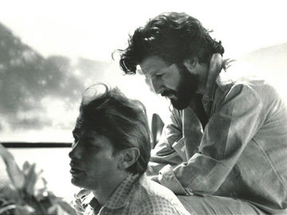
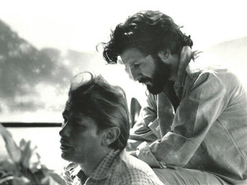

Ruy Guerra
Bem-vindo ao site Ruy Guerra
Este site é um espaço de referência sobre a vida e a obra de Ruy Guerra, um dos mais importantes realizadores do cinema moderno. Aqui você encontrará informações detalhadas sobre sua vasta filmografia, seus escritos, sua atuação como ator e sua trajetória pelo mundo. Explore as diferentes seções para mergulhar no universo de um artista que atravessou fronteiras geográficas e linguagens artísticas, deixando uma marca indelével na cultura contemporânea.
![[Imagem de Ruy Guerra jovem com câmera]](images/ruy_guerra-chico_buarque.jpg)
![[Imagem de Ruy Guerra em set de filmagem]](images/deco2.jpg) 

Biografia
Ruy Alexandre Guerra Coelho Pereira de Oliveira, nascido em Lourenço Marques (hoje Maputo), Moçambique, em 22 de agosto de 1931, é uma figura polivalente e fundamental na cultura de língua portuguesa. Cineasta, poeta, dramaturgo, letrista e professor, sua vida e obra são marcadas por um trânsito constante entre geografias, linguagens e formas de expressão.
Sua jornada no cinema começa na França, onde estuda no IDHEC (Institut des Hautes Études Cinématographiques) em Paris. Ao chegar no Brasil no final dos anos 50, torna-se uma das peças-chave do Cinema Novo, movimento que revolucionou a estética e a política do cinema brasileiro. Filmes como "Os Cafajestes" (1962) e "Os Fuzis" (1964), vencedor do Urso de Prata em Berlim, estabelecem seu nome como um diretor de olhar agudo e contundente sobre as realidades sociais.
Sua carreira internacional inclui trabalhos na França, México e Moçambique, onde dirigiu o Instituto Nacional de Cinema após a independência do país. A parceria com o escritor Gabriel García Márquez rendeu obras memoráveis como "Erêndira" (1983) e "A Bela Palomera" (1988). No Brasil, continuou a produzir obras impactantes como "A Queda" (1978), "Ópera do Malandro" (1986) e "Estorvo" (2000).
Filmografia
Longas-metragens
Os Fuzis
1964
A Queda
1978
Erêndira
1983
Ópera do Malandro
1986
Ator
Além de dirigir, Ruy Guerra também marcou presença em frente às câmeras. Sua atuação mais icônica é como Dom Pedro de Ursua em "Aguirre, a Cólera dos Deuses" (1972), do cineasta alemão Werner Herzog, um papel que se tornou emblemático na história do cinema.
Escritos
A palavra é outro território fundamental para Ruy Guerra. Sua produção literária transita entre a poesia, a crônica e o conto, sempre com um olhar poético e crítico sobre o mundo.
"O Rinoceronte" (fragmento)
O rinoceronte avança, lento e pesado,
carregando no focinho o peso do mundo.
Sua pele é um mapa de batalhas antigas,
e seus olhos, pequenos, viram tudo.
Pelo Mundo
Um cidadão do mundo. As imagens a seguir registram encontros, viagens e momentos da vida de Ruy Guerra em diferentes cantos do planeta, refletindo sua trajetória cosmopolita.
Últimas Notícias
Retrospectiva da obra de Ruy Guerra no MoMA
15 de Agosto de 2025
O Museu de Arte Moderna de Nova York anuncia uma retrospectiva completa dos filmes de Ruy Guerra, celebrando a contribuição do cineasta para o cinema mundial.
Lançamento de coletânea de poesias
02 de Julho de 2025
A editora X anuncia o lançamento de "24 Quadros", uma nova coletânea que reúne poemas inéditos de Ruy Guerra escritos ao longo da última década.
Contato
Para informações sobre a obra, licenciamento de filmes ou projetos, por favor, entre em contato através dos canais abaixo.
Assessoria de Imprensa: imprensa@ruyguerra.com
Agente: agente@ruyguerra.com